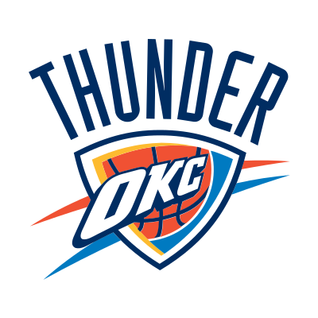

His teams won one title, with the 1985-86 Boston Celtics. In his 188 games for 3 teams over 5 seasons they went 139–49 (73.9%), +90 games over .500, with an average final finish of 9.2.
Jump to: Record by opponent · Season by season · Teammate help
Compare Rick Carlisle with…
Final NBA finish, season by season
Title Finals Other playoffs Missed playoffs. #1 = champion; the dashed line is last place that season. Each point opens that season's final standings.
All 23 teams ranked in 1985-86, his best finish (#1)Teammate help
 Larry Bird37.03 seasons
Larry Bird37.03 seasons Kevin McHale8.53 seasons
Kevin McHale8.53 seasons Patrick Ewing4.51 season
Patrick Ewing4.51 season
Career
Career records (W–L, W − L, with and without) include 2026-27 games through Nov. 18, 2026; season counts and finishes are through 2025-26. Each card opens its board in the same scope. How we count.

Latest completed seasons
Season by season
Newest first; every header sorts. Final NBA finish is the team's rank among all teams that season (#1 = champion) and opens that season's standings. "Without him" uses the team-season window; the span line counts only the games between his first and last game for the team.
| 1989-90 | #27 of 27 | 17–65 20.7% | Missed playoffs | 5 of 82 | 1–4 20.0% | 16–61 20.8%span: 2–7, gap −2.2 | −0.8 | |
| 1987-88 | #14 of 23 | 38–44 46.3% | Lost 1st round 1–3 | 26 of 82 | 12–14 46.2% | 26–30 46.4%span: 21–22, gap −2.7 | −0.3 | |
| 1986-87 | #2 of 23 | 59–23 72.0% | Lost Finals 2–4 | 42 of 82 | 31–11 73.8% | 28–12 70.0%span: 17–7, gap +3.0 | +3.8 | |
| 1985-86 | #1 of 23 | 67–15 81.7% | Title 4–2 | 77 of 82 | 63–14 81.8% | 4–1 80.0%span: 3–0, gap −18.2 | +1.8 | |
| 1984-85 | #2 of 23 | 63–19 76.8% | Lost Finals 2–4 | 38 of 82 | 32–6 84.2% | 31–13 70.5%span: 24–8, gap +9.2 | +13.8 |
Teammate help by season
Two separate numbers per season, each with every teammate that adds to it. Help this season = Teammates Score points for honors won that season by teammates who shared a game with him. Help coming in = the same teammates' honors from the season before. How help works.
- 1989-90
 New JerseyHelp this season: 0, no honored teammate
New JerseyHelp this season: 0, no honored teammateMore: help coming in
Help coming in (teammates' honors the season before): 0.125 = 0.125 Chris Morris
- 1987-88
 New York
New York
Help this season: 5.25 = 4.5 Patrick Ewing + 0.75 Mark Jackson
Patrick Ewing All-NBA 2ndAll-StarAll-Def 2nd4.526 gMark Jackson ROYAll-Rookie 1st0.7526 g
More: help coming in and other teammates
Help coming in (teammates' honors the season before): 0
Other teammates (no honors that season): Gerald Wilkins 26 g, Kenny Walker 26 g, Sidney Green 26 g, Bill Cartwright 26 g, Johnny Newman 25 g, Pat Cummings 19 g, Trent Tucker 16 g, Billy Donovan 12 g, Louis Orr 10 g, Sedric Toney 7 g, Chris McNealy 7 g, Tony White 6 g, Ray Tolbert 5 g, Bob Thornton 1 g
- 1986-87
 Boston
Boston
Help this season: 13 = 6 Kevin McHale + 5 Larry Bird + 1 Robert Parish + 1 Dennis Johnson
Kevin McHale All-NBA 1stAll-StarAll-Def 1st642 gLarry Bird All-NBA 1stAll-Star536 g Robert Parish All-Star142 g
Robert Parish All-Star142 g Dennis Johnson All-Def 1st142 g
Dennis Johnson All-Def 1st142 g
More: help coming in and other teammates
Help coming in (teammates' honors the season before): 25 = 21 Larry Bird + 2 Kevin McHale + 1 Robert Parish + 0.5 Dennis Johnson + 0.5 Bill Walton
Other teammates (no honors that season): Fred Roberts 39 g, Greg Kite 39 g, Jerry Sichting 38 g, Danny Ainge 33 g, Sam Vincent 28 g, Darren Daye 26 g, Conner Henry 16 g, David Thirdkill 15 g, Scott Wedman 6 g, Bill Walton 2 g, Andre Turner 2 g
- 1985-86Boston
Help this season: 25 = 21 Larry Bird + 2 Kevin McHale + 1 Robert Parish + 0.5 Bill Walton + 0.5 Dennis Johnson
Larry Bird MVPFinals MVPAll-NBA 1stAll-Star2177 gKevin McHale All-StarAll-Def 1st265 gRobert Parish All-Star176 g Bill Walton Sixth Man0.575 gDennis Johnson All-Def 2nd0.573 g
Bill Walton Sixth Man0.575 gDennis Johnson All-Def 2nd0.573 g
More: help coming in and other teammates
Help coming in (teammates' honors the season before): 14 = 11 Larry Bird + 1.5 Dennis Johnson + 1 Robert Parish + 0.5 Kevin McHale
Other teammates (no honors that season): Jerry Sichting 77 g, Danny Ainge 75 g, Scott Wedman 74 g, Greg Kite 63 g, Sam Vincent 53 g, David Thirdkill 46 g, Sly Williams 5 g
- 1984-85Boston
Help this season: 14 = 11 Larry Bird + 1.5 Dennis Johnson + 1 Robert Parish + 0.5 Kevin McHale
Larry Bird MVPAll-NBA 1stAll-Star1138 gDennis Johnson All-StarAll-Def 2nd1.537 gRobert Parish All-Star136 gKevin McHale Sixth Man0.536 g
More: help coming in and other teammates
Help coming in (teammates' honors the season before): 24.5 = 21.5 Larry Bird + 1.5 Kevin McHale + 1 Robert Parish + 0.5 Dennis Johnson
Other teammates (no honors that season): Scott Wedman 37 g, Danny Ainge 36 g, Quinn Buckner 35 g, Greg Kite 32 g, Carlos Clark 31 g, Cedric Maxwell 28 g, M.L. Carr 26 g, Ray Williams 7 g
Record against each opponent
Regular season, through 2025-26 (2026-27 games not included): 188 games, 139–49, against 24 franchises.
Grouped by franchise (named as today); game lists keep each team's name that season. Filters and the tab are kept in the URL, so a filtered view can be shared.
| Games list | |||||||
|---|---|---|---|---|---|---|---|
| 16 | 10–6 | 62.5% | +4 | 1–0 (1–0 in games) | 1984-85 to 1987-88 | ||
| 14 | 11–3 | 78.6% | +8 | N/A | 1984-85 to 1987-88 | ||
| 13 | 12–1 | 92.3% | +11 | N/A | 1984-85 to 1987-88 | ||
| 12 | 9–3 | 75.0% | +6 | N/A | 1984-85 to 1987-88 | ||
| 11 | 8–3 | 72.7% | +5 | 1–0 (3–0 in games) | 1984-85 to 1987-88 | ||
| 11 | 6–5 | 54.5% | +1 | N/A | 1984-85 to 1987-88 | ||
| 10 | 8–2 | 80.0% | +6 | N/A | 1984-85 to 1986-87 | ||
| 10 | 7–3 | 70.0% | +4 | N/A | 1984-85 to 1987-88 | ||
| 10 | 9–1 | 90.0% | +8 | N/A | 1984-85 to 1986-87 | ||
| 9 | 8–1 | 88.9% | +7 | 1–0 (3–0 in games) | 1984-85 to 1986-87 | ||
| 7 | 5–2 | 71.4% | +3 | N/A | 1984-85 to 1987-88 | ||
| 7 | 6–1 | 85.7% | +5 | N/A | 1984-85 to 1987-88 | ||
| 7 | 4–3 | 57.1% | +1 | N/A | 1984-85 to 1989-90 | ||
 Oklahoma Cityas SeattleMost-faced: Tom Chambers (6 games) · Head-to-Head | 6 | 4–2 | 66.7% | +2 | N/A | 1984-85 to 1987-88 | |
| 6 | 2–4 | 33.3% | −2 | N/A | 1984-85 to 1989-90 | ||
| 5 | 1–4 | 20.0% | −3 | 0–1 (0–2 in games) | 1987-88 to 1989-90 | ||
| 5 | 4–1 | 80.0% | +3 | N/A | 1984-85 to 1986-87 | ||
| 5 | 5–0 | 100.0% | +5 | N/A | 1984-85 to 1986-87 | ||
| 5 | 5–0 | 100.0% | +5 | 1–0 (2–1 in games) | 1984-85 to 1986-87 | ||
| 5 | 5–0 | 100.0% | +5 | N/A | 1984-85 to 1986-87 | ||
| 5 | 3–2 | 60.0% | +1 | N/A | 1984-85 to 1987-88 | ||
| 4 | 2–2 | 50.0% | 0 | N/A | 1985-86 to 1987-88 | ||
| 4 | 4–0 | 100.0% | +4 | N/A | 1984-85 to 1986-87 | ||
| 1 | 1–0 | 100.0% | +1 | N/A | 1989-90 |
Rows add up to his career record in his games. A playoff series counts when he played in it; early round-robin games show as games only. How we count.
Playoffs, with and without him
Arrival and departure
Team wins per 82 games the season before he arrived vs his first season there, and his last season vs the season after he left. Per 82 so short seasons compare fairly. These are team records, not a measure of what he did.
| Left | 1990-91 | 1989-90: 17–65 17.0 per 82 | 1990-91: 26–56 26.0 per 82 | +9.0 wins | |
| Arrived | 1989-90 | 1988-89: 26–56 26.0 per 82 | 1989-90: 17–65 17.0 per 82 | −9.0 wins | |
| Left | 1988-89 | 1987-88: 38–44 38.0 per 82 | 1988-89: 52–30 52.0 per 82 | +14.0 wins | |
| Arrived | 1987-88 | 1986-87: 24–58 24.0 per 82 | 1987-88: 38–44 38.0 per 82 | +14.0 wins | |
| Left | 1987-88 | 1986-87: 59–23 59.0 per 82 | 1987-88: 57–25 57.0 per 82 | −2.0 wins | |
| Arrived | 1984-85 | 1983-84: 62–20 62.0 per 82 | 1984-85: 63–19 63.0 per 82 | +1.0 wins |
Best duos
Team record in regular-season games both played, top 10 by win %, at least 50 games together.
- Bill Walton
64–13 83.1%
- Scott Wedman 96–21 82.1%
- David Thirdkill 50–11 82.0%
- Sam Vincent 66–15 81.5%
- Danny Ainge 117–27 81.2%
- Kevin McHale
116–27 81.1%
- Dennis Johnson
123–29 80.9%
- Larry Bird
122–29 80.8%
- Robert Parish
124–30 80.5%
- Jerry Sichting 92–23 80.0%